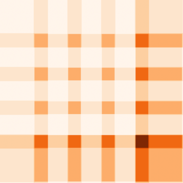

Inference#
You can run inference with TerraTorch by providing the path to an input folder and output directory. You can do this directly via the CLI with:
terratorch predict -c config.yaml --ckpt_path path/to/model/checkpoint.ckpt --data.init_args.predict_data_root input/folder/ --predict_output_dir output/folder/
This approach works only for supported data modules like the TerraTorch GenericNonGeoSegmentationDataModule.
E.g., the generic multimodal datamodule expects a dictionary for predict_data_root.
Therefore, one can define the parameters in the config file as well:
data:
class_path: terratorch.datamodules.GenericNonGeoSegmentationDataModule
init_args:
...
predict_data_root: path/to/input/files/
We provide two tutorials for basic inferrence and a simplified inference.
Tiled inference via CLI#
TerraTorch supports a tiled inference that splits up a tile into smaller chips. With this approach, you can run a model on very large tiles like a 10k x 10k pixel Sentinel-2 tile.
Define the tiled inference parameters in the yaml config like the following:
model:
class_path: terratorch.tasks.SemanticSegmentationTask
init_args:
...
tiled_inference_parameters:
crop: 224
stride: 192
Next, you can run:
terratorch predict -c config.yaml --ckpt_path path/to/model/checkpoint.ckpt --data.init_args.predict_data_root input/folder/ --predict_output_dir output/folder/
Warning
The Lightning CLI load each input tile automatically to the GPU before passing it to tiled_inference.
This can result in CUDA out-of-memory errors for very large tiles like 100k x 100k pixels.
In this case, run the tiled inference via a python script and do not load the full tile into the GPU.
By default, tiled inference adds some padding around the tile and removes the edge pixels of each chip before merging which are both defined by the parameter delta.
The predictions of overlapping patches are using blend masks to edges in the predictions. This can be deactivated with blend_overlaps=False.
Here is a comparison between both with their respective predictions counts per pixel.
Pixels along the right side and bottom can have more predictions if the tile is not fully divisible by the define crop and stride size.
TerraTorch maximises the overlap to fully leverage the compute while generating at least one prediction per pixel.
-
Without blending, "patchy" predictions with visible lines along the chip edges can appear. 
-
By default, a cosine-based blend mask is applied to each chip which smooths the generations.
Tiled inference via Python#
You can use TerraTorch to run tiled inference in a python script like the following:
import torch
import rioxarray as rxr
from terratorch.tasks import SemanticSegmentationTask
from terratorch.tasks.tiled_inference import tiled_inference
from terratorch.cli_tools import LightningInferenceModel
# Init an TerraTorch task, e.g. for semantic segmentation
model = SemanticSegmentationTask.load_from_checkpoint(
ckpt_path, # Pass the checkpoint path
model_factory="EncoderDecoderFactory",
model_args=model_args, # Pass your model args
)
# Alternatively build the model from a config file
model = LightningInferenceModel.from_config(
config_file,
ckpt_path,
# additional params, e.g. predict_dataset_bands
)
# Load your data
input = rxr.open_rasterio("input.tif")
# Apply your standardization values to the input tile
input = (input - means[:, None, None]) / stds[:, None, None]
# Create input tensor with shape [B, C, H, W] on CPU
input = torch.tensor(input, dtype=torch.float, device='cpu').unsqueeze(0)
# Inference wrapper for TerraTorch task model
def model_forward(x, **kwargs):
# Retuns a torch Tensor
return model(x, **kwargs).output
# Run tiled inference (data is loaded automatically to GPU)
pred = tiled_inference(
model_forward,
input,
crop=256,
stride=240,
batch_size=16,
verbose=True
)
# Remove batch dim and compute segmentation map
pred = pred.squeeze(0).argmax(dim=0)
Tip
You can easily modify the script by adjusting the parameters or using a custom PyTorch model instead of model_forward for tiled_inference.
It is just important, that the output of the passed forward function returns a torch tensor.
Function reference#
terratorch.tasks.tiled_inference.tiled_inference(model_forward, input_batch, out_channels, inference_parameters, **kwargs)
#
Divide an image into (potentially) overlapping tiles and perform inference on them. Additionally, rebatch for increased GPU utilization.
Parameters:
| Name | Type | Description | Default |
|---|---|---|---|
model_forward
|
Callable
|
Callable that return the output of the model. |
required |
input_batch
|
Tensor
|
Input batch to be processed |
required |
out_channels
|
int
|
Number of output channels |
required |
inference_parameters
|
TiledInferenceParameters
|
Parameters to be used for the process. |
required |
Returns:
| Type | Description |
|---|---|
Tensor
|
torch.Tensor: The result of the inference |